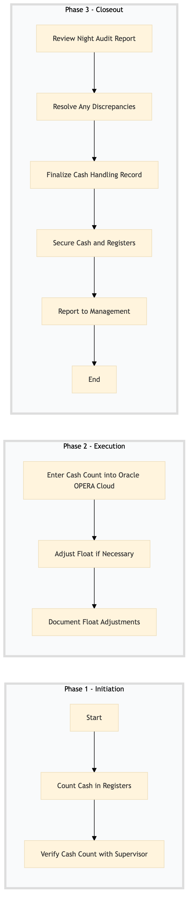

| Role | Steps |
|---|---|
| Front Desk Agent | 1.1 3.4 |
| Front Desk Supervisor | 1.2 2.1 3.1 |
| Revenue Manager | 2.2 2.3 3.2 3.5 |
| Step | Name | Role | System | Input | Output | KPI | Dec? | Exc? | Pain Point / Risk |
|---|---|---|---|---|---|---|---|---|---|
| 1.1 | Count Cash in Registers | Front Desk Agent | Oracle OPERA Cloud | Physical cash from registers | Cash count report | Less than 5 minutes per register | N | Y | Handling large volumes of cash efficiently |
| 1.2 | Verify Cash Count with Supervisor | Front Desk Supervisor | Oracle OPERA Cloud | Cash count report from Front Desk Agent | Verified cash count report | Less than 3 minutes | N | Y | Ensuring accuracy in cash counts |
| 2.1 | Enter Cash Count into Oracle OPERA Cloud | Front Desk Supervisor | Oracle OPERA Cloud | Verified cash count report | Updated PMS with cash balances | Less than 5 minutes | N | Y | Data entry errors in the PMS |
| 2.2 | Adjust Float if Necessary | Revenue Manager | Oracle OPERA Cloud | Updated PMS with cash balances | Adjusted float amount | Less than 10 minutes | Y | N | Determining the correct float adjustment |
| 2.3 | Document Float Adjustments | Revenue Manager | Oracle OPERA Cloud | Adjusted float amount | Float adjustment documentation | Less than 5 minutes | N | Y | Maintaining accurate records of float adjustments |
| 3.1 | Review Night Audit Report | Front Desk Supervisor | Oracle OPERA Cloud | Night audit report | Approved night audit report | Less than 15 minutes | Y | N | Identifying discrepancies in the night audit |
| 3.2 | Resolve Any Discrepancies | Revenue Manager | Oracle OPERA Cloud | Approved night audit report with discrepancies | Corrected night audit report | Less than 30 minutes per discrepancy | Y | N | Efficiently resolving cash handling issues |
| 3.3 | Finalize Cash Handling Record | Front Desk Supervisor | Oracle OPERA Cloud | Corrected night audit report | Finalized cash handling record | Less than 5 minutes | N | Y | Completing the final documentation |
| 3.4 | Secure Cash and Registers | Front Desk Agent | None | Finalized cash handling record | Secured cash and registers | Less than 10 minutes | N | Y | Ensuring physical security of cash |
| 3.5 | Report to Management | Revenue Manager | Oracle OPERA Cloud | Finalized cash handling record | Management report | Less than 10 minutes | N | Y | Communicating cash handling results to management |
The FO-NS-05 process ensures proper cash handling and float management at a full-service Marriott hotel, maintaining financial accuracy and operational efficiency.